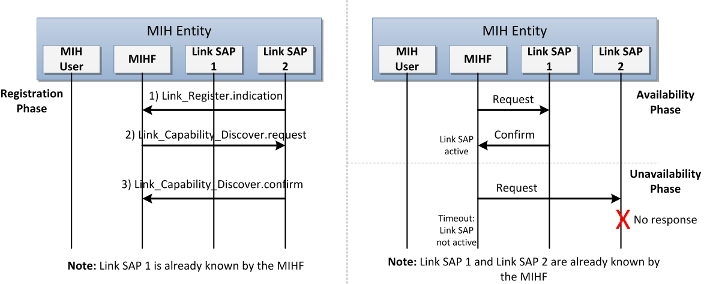
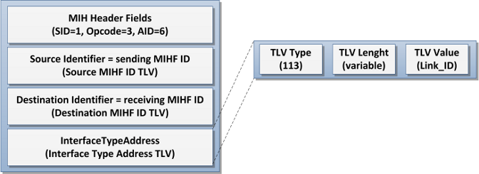
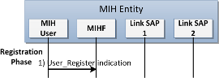
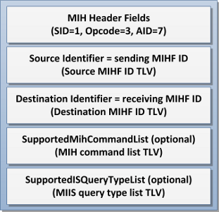

Due to the decoupled architecture of the MIHF and the local entities (i.e. Link SAPs and MIH-Users), it is necessary to configure these entities in the MIHF in order to know about its existence. They can be configured statically, by the user, or automatically, using a discovery mechanism. The static configuration can be very limited, and may fail when, for example, the MN activates/deactivates an interface or even hot-plugs new ones. However, the IEEE 802.21 standard does not define any mechanism to discover the local entities so, the development of a novel local discovery procedure is required, allowing the MIHF to discover its Link SAPs and MIH-Users and their capabilities in a dynamic way. Thus, local discovery refers to the procedure that allows the MIHF to discover its Link SAPs and their capabilities, as well as its MIH-Users.
Link SAP Discovery

The local discovery mechanisms implemented on ODTONE enables the discovery and management of the available Link SAPs. Thus, Link SAPs discovery is divided in three main phases: the registration, SAP availability and SAP unavailability.
In the registration phase, the MIHF is permanently listening for incoming messages from the Link SAPs at a fixed port. When a Link SAP becomes active, it locally sends a "Link_Register.indication" message to the MIHF indicating its intention to register with the MIHF. This message carries information about the Link SAP, including its ID, listening port, link layer technology and link address. Next, the MIHF requests the Link SAP for its capabilities by sending a "Link_Capability_Discover.request" message. This process is repeated for all Link SAPs in order to provide the MIHF with the full capabilities belonging to that node.
![[Note]](../../images/note.png) |
Note |
|---|---|
|
Because there is no primitive/message in the 802.21 standard that allows the Link SAP to send the register information to the MIHF, the "Link_Register.indication" message was created. This message allows the Link SAP to send informations to the MIHF about which technology supports and which interface it manages. Associated with the creation of this new message type was also created a new TLV type named “Interface Type Addr TLV” whose correspondent data type is a “LINK_ID”.  |
The second phase is availability and, as the name implies, deals with the Link SAP availability, i.e., the MIHF must be able to detect the active presence of the Link SAP. So, when the MIHF receives a response or an event notification from the Link SAP, it detects the Link SAP as active.
Finally, the third phase deals with SAP unavailability. When the MIHF does not receive a response from a Link SAP, the Link SAP must be considered as inactive or unresponsive. The MIHF must, therefore, initiate the procedures to update its local capabilities.
|
Note |
|---|---|
The waiting time interval for response message and how many fail responses can occur before the MIHF forget Link SAP can be defined at the MIHF configuration file. |
MIH User Discovery

The process of discovering MIH-Users implemented on ODTONE is based on a registration process of the MIH-User with the MIHF. When the MIH-User becomes active, it locally sends a "User_Register.indication" message to the MIHF, including information about its listening port and role (Information server, Mobility, Monitoring or Discovery).
Upon the reception of the "User_Register.indication" message, the MIHF learns about the MIH-User and the communications between them can start normally.
|
Note |
|---|---|
|
Because there is no primitive/message in the 802.21 standard that allows MIH-User to send register information to the MIHF the “User_Register.indication” message was created. This message allows the Link SAP to send informations to the MIHF about its function. Associated with the creation of this new message type was also created a new TLV type named “User Role TLV” whose correspondent data type is a “USER_ROLE” (which was also created).  |
|
Note |
|---|---|
Only one MIH-User for handling handover operations could exists in each MIHF. This way, the last MIU-User to register with that role will be the MIH-User that will handle the handover operations. The same occurs with the Information server. |